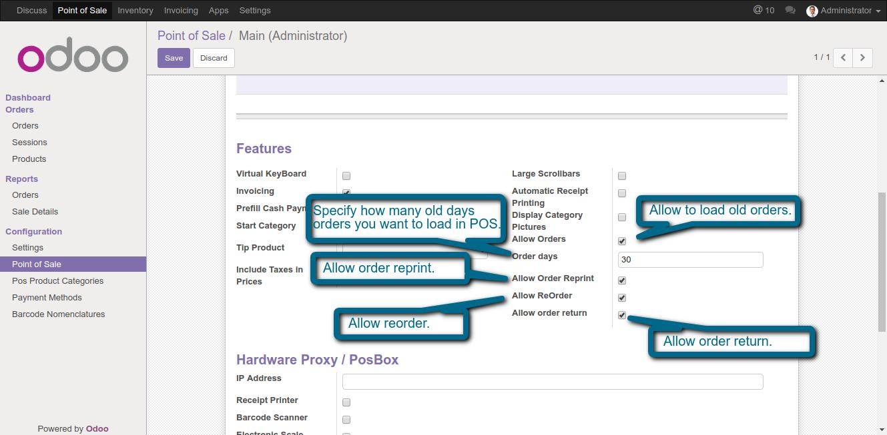
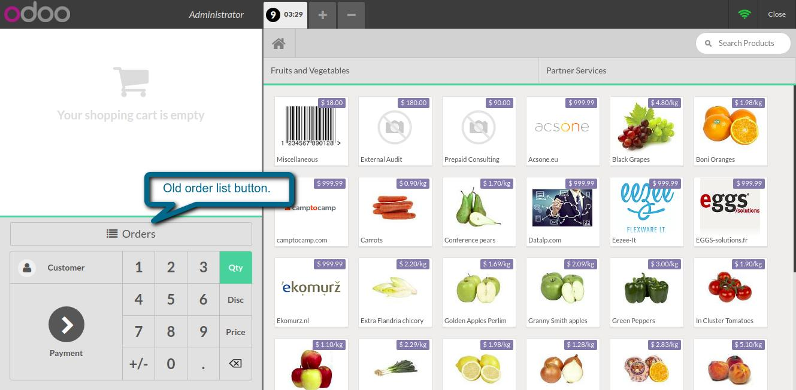
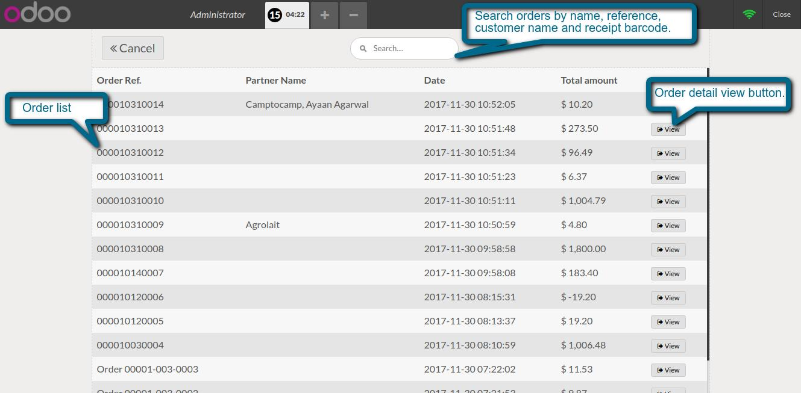
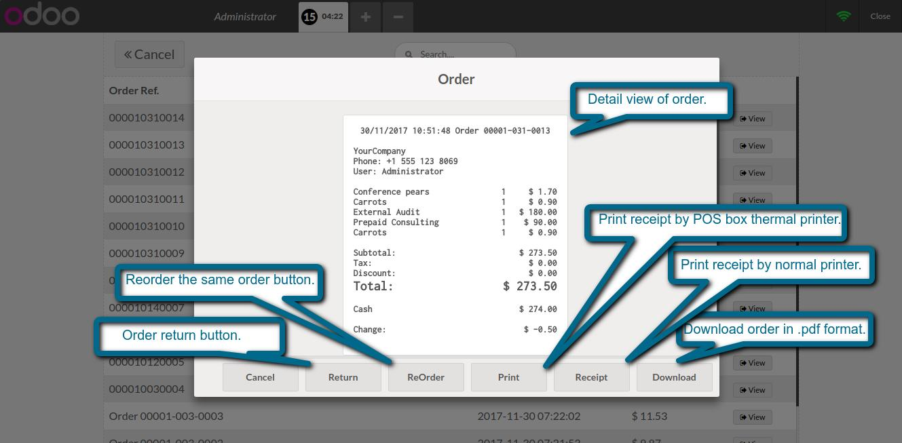
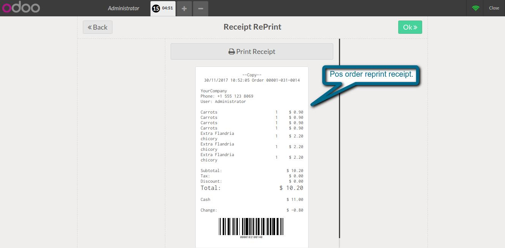
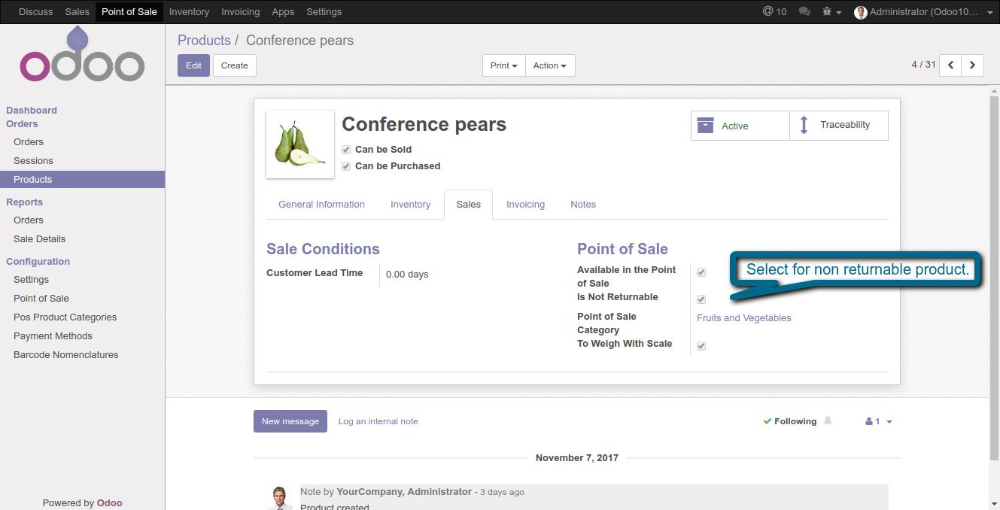
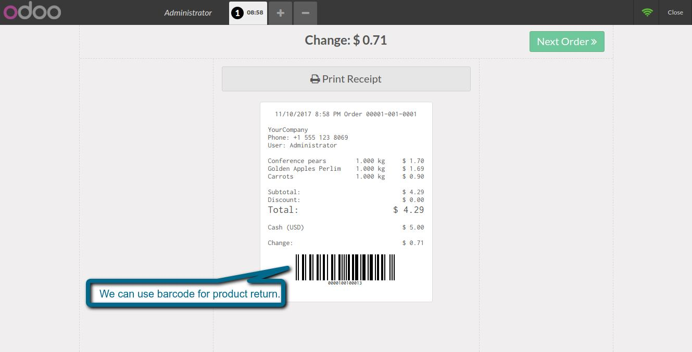
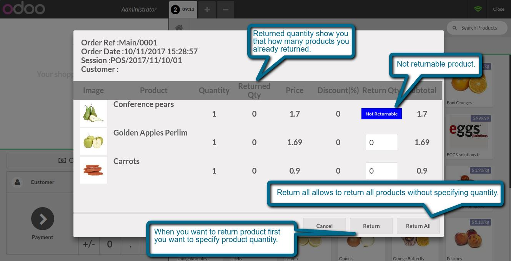
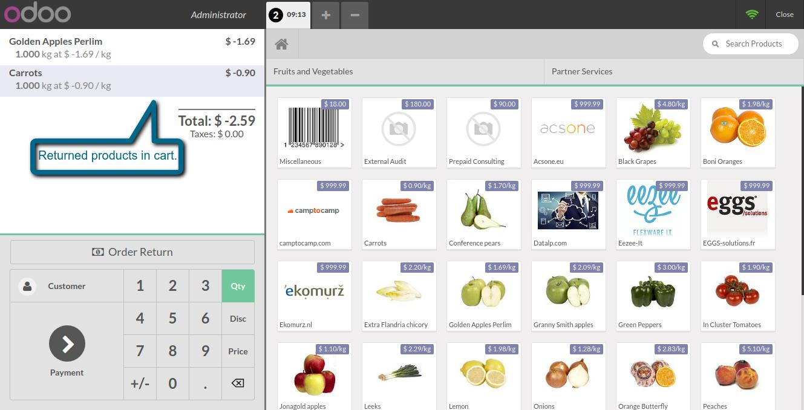
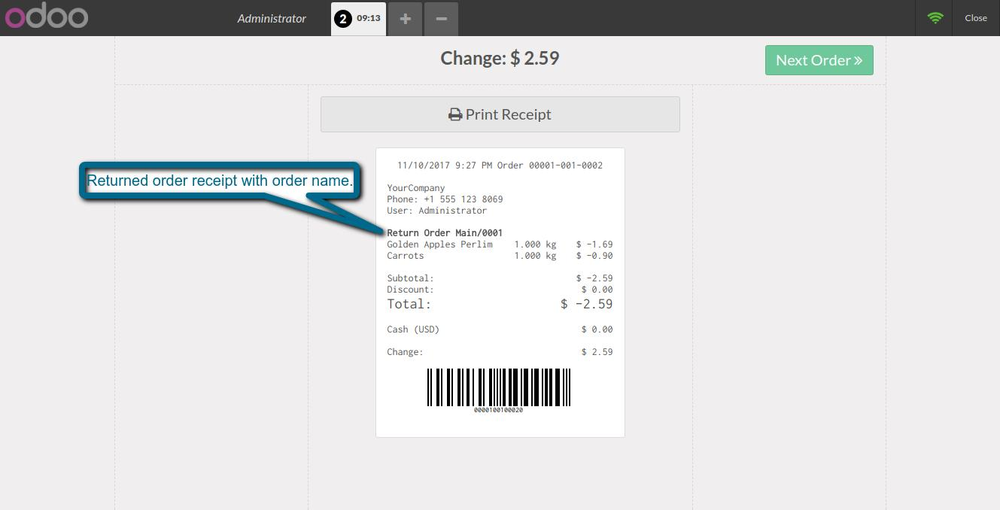

Pos order operations
Allows you to reprint the receipt by posbox thermal printer and normal printer, reorder and order return
Features
- By help of this module we can easily reprint the old receipt by normal printer, POS box thermal printer and download in .pdf format.
- We can easily return product partially and fully return.
- We can also reorder old orders also.
- We can also use barcode for searching order.
1. Pos configuration for order reprint, reorder and order return.

2. POS order list button.

3. List of old orders.

4. Order reprint, reorder and order return buttons.

5. Order reprint receipt.

6. Specify product is returnable or not.

7. POS order receipt with barcode.

8. Return order popup. We can return all product and partially also.

9. Returnable products in cart.

10. Return order receipt.

If You Need Any Help Please Contact
Email Id: dev.webveer@gmail.com